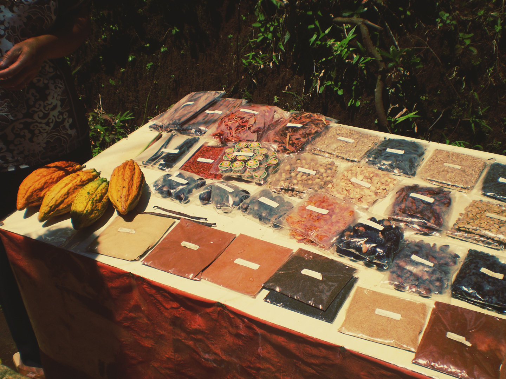

Photo By trunklog.com
一、工作
从我的滴答清单日历表上看，8月份是两个项目占据了几乎整个月的时间。
还好，下旬上线了，上线后一周看数据，效果还是很明显的。其中一个项目在上个月也提到了，就是前期花费了不少功夫跟人沟通对接，连我的FE小伙伴都说明明只是接入，最后却简直像在做破解。
上个月看书和整理思绪还是有好处了，现在渐渐下意识用上运营思维，对接下来的工作进行筹划。
经验就是——
一定要从产品负责人的角度去思考策略层面的问题，比如说运营或者产品策略应该如何做，产品处于什么阶段做什么样的规划等等。时不时从具体执行工作中抽离，对产品进行脑暴和思考，形成自己的方法论。对每个阶段的项目进行反思和总结，尽快梳理出自己的实战打法。
公司里对越高级别的要求，往往不仅是具体的项目指标上，而是还要看个人的专业输出、是否形成方法论、是否对培养人才做出贡献等等。
所以，日常的总结和系统性的整理是很有必要的。当你在准备述职PPT的时候就知道这多么有！必！要！了！
关于述职怎么说，怎么准备材料，哦，太多了，可以专门写篇文章来记录分享。这里先暂且不表。
二、阅读&写作
课程测评：好好学习平台
- 《心流》
- 《中古中国门阀大族的消亡》
- 《破碎的美国：特朗普传》
- 《如何快速建立属于你的知识库》
- 《如何通过3本书了解新领域》
- 《格调：社会等级与生活品味》
- 《大白话说透区块链》
- 《从0到1打造超级社群》
书籍阅读
已完成：
- 《运营之光2.0》
- 《百年孤独》
进行中：
- 《开发故事创意》
写作主题阅读进度：2/6
职场技能拓展主题阅读进度：3/4
本月写作输出记录：
- “更无用”的写作课11-塑造难忘的人物
- 《心流》笔记——在工作中的运用——《心流》读书笔记
- 无语的简评——《破碎的美国：特朗普传》——一本书的简评
- PM是这样理解运营的“基本方法论”——《运营之光2.0》笔记（上）——《运营之光2.0》读书笔记
- 中国自此再无“贵族”——《中古中国门阀大族的消亡》书评
- 陆奇+YC中国，是坑还是美好新世界？
- 天哪，吃了这么多年主食，这本书却告诉我都是错的？——《谷物大脑》书评
- 学了那么教人如何建立知识体系的付费课程，就这个我服气！
总结回顾
求表扬 And 立个flag
这个月真的是奶牛上身！极其高产，公众号的关注者都有点不太习惯。
其实在月初开始使用scrivener来组织文稿，效率很高，在上个月总结里也提到过，基本上平时想到只言片语或者零散的结构，就在上面记下来，周末只要组织语言写出来就行。有点像大纲跟正文的关系，所以看到我工作日每周一、三、五发送文章，不要以为我在摸鱼！那是因为周末辛苦攒好了一周的稿子，定时群发的！
其中呢，有两个连载计划：
一个是被简书的写作课启发，准备一边做写作课的笔记，一边整理连载发布手把手教写小说创作《dannii的菜鸟小说创作指南手册》；
另一个是看了《运营之光2.0》，发布了运营方法论上部的文章，下部分关于具体运营和产品策略的实战打法，我准备用一种更新的形式写出来，就不是读书笔记或者书评了。
以前写书评——或者读书笔记——我很早就感觉写作格式和形式太套路了。本来就是想通过写出来自己留存并运用，以及分享给其他人看，但现在大多时候写的书评或读书笔记，十之八九我自己再看都觉得没意思，不吸引我继续读下去。
太生硬。
所以，我在想，读书是件很费时间和精力的事情，如果我读完一本书，没有产出比投入时间更有价值的东西，那太亏了！反正了花时间写东西了，框架、大纲、内容都差不多，那写作形式上，我希望能更吸引人，让人感觉不出来是我在“推销”或者“自言自语记录”一本书。
回头发个愿望帖，保佑我一定要把这两个连载系列善终啦！
上月问题追踪
上个月的问题是：
同时阅读多本书，笔记整理起来会很散，太麻烦了，而且没有及时输出笔记，浪费了阅读成本
当时给的解决策略是：
切记不要有完美主义。
利用中午或其他整理笔记的时间，顺手按照自己的阅读进度做脑图，提前整理好书评或笔记的框架，功夫在平日。然后固定周五周六，整理本周读书的笔记，可以允许未完成的笔记发布到网上，因为发到网上，自己会督促自己不留未完成的作品给别人看，所以一定会找时间补充完全。
这个方法亲测有效，打5颗星！既利用了碎片时间，又可以阻止自己的惰性。
踏入职场之后，就很难再找到一大块完整的时间，别说看书，连上班的时候，都会遇到各种被零散事情打扰的情况。多遇到这种问题，就积累更多的经验。
人比其他动物高级，就在于我们会反思，总结经验和利用工具。
调整策略
问题：
这个月下旬就遇到问题了，因为私人原因，搬家啊生病啊情绪问题啊等等，各种不可抗力因素，导致无法做到日更。
怎么办？
解决策略：
目前想到的办法——
- 针对客观外部因素
- 针对客观外部因素，该利用碎片时间攒素材就攒，等周末有空了继续写就行
- 学习英国作家毛姆，随手记下自己各种各样的看法和感受，哪怕一句话也行。他说“看到让你眼前一亮的东西，你就把它记录下来……我们都有过不错的想法，有过真切的感受，本觉得将来应该能用得上，但我们太懒了，不做记录，最终把它们忘了个精光”
- 针对个人内部因素
- 唔，情绪问题是很正常的，高度频繁集中一段时间，因为某件事打断，就很容易断掉习惯的养成
- 这次是因为从8.23后搬家带来的心理压力，中断了正常读书和写作流程。将来一定会遇到更多无法预料的东西影响心情，建议是根据情况先解决事情本身带来的客观麻烦，然后通过解决问题缓解心理压力，最后通过运动和多外出散心来调节身体状况——其实就是分散注意力啦。
三、尝试了一下禁食
这个禁食并不是为了减重——虽然说是越发感觉需要锻炼了——实质上是看了《谷物大脑》后做的一个实验。
关于禁食，还是挺有科学依据的，在禁食时，人类肝脏会产生的一种叫β-羟丁酸的东西。它可以让神经元免授阿尔茨海默病和帕金森病的侵害，还有抗氧化功能。所以进行24到72小时的禁食，对身体是有好处的。
于是在8.25起来后，一天中除了喝水忍住了吃任何东西——天知道晚上我拿起手机又放下，咬紧牙关克制住自己没有点一份螺蛳粉的外卖是有多痛苦！
成功度过一天，然鹅……
第二天中午由于太饿了，点了一家云南菜……168元……168……168……
然后……
撑到胃疼了……
事实证明，禁食是可以的，但还有注意后续动作。
别暴饮暴食，否则后果自负。
四、有史以来最快的一次搬家
8月21日，临近下班，突然接到中介电话，很凶巴巴地说我们违约了，限我们两天之内搬出去，否则他们会过来清理我们的东西。
听到这个消息我整个人就懵逼了……
先说下我这个房子，租的时候因为是别人临时要离开转租的，所以房租比周围便宜将近1000块左右，第一年没有中介费，但第二年续租的时候中介房租张的不多，但突然要中介费，其实变相涨了将近800块房租，还是比周围便宜。
然后想想最近猛涨的房租……估计得再涨个1500-2000才与周围持平吧，突然就好像get到中介的意图。
愤怒的同时的确还是有点心虚，因为之前是有一个朋友的朋友在我们这暂住了3个月，给了租金。
签合同上的确说不能转租，但当时口头上有跟中介说可能会有朋友来，或者找人合租，他说没问题。
怪当初租房子的时候太心急找了个小中介，太年轻啊。
还是太怂，真怕这黑中介到时候找人堵我房子，或者扔我东西，所以回到家晚上临时请了2天假。
当天晚上，下载各种租房软件，用1个小时圈地图，定标准，在58上11、12点打电话给我爱我家、链家这些经纪人打电话约看房。这里真的蛮感谢现在这个房子的经纪人，凌晨了，还回电话过来告诉我们房源信息，老负责了。
第二天上午，直接奔目标圈地附近，找那个经纪人，1个小时在店里选房源看图，因为我养了3只猫，只能自己租个2居室，再找室友。可惜2居室太少，在网上看好的一些环境特别好的小区没房了。最后定了一个离地铁很算近，小区不新不旧的房源，下午就去看了。看了3套，就把第一个看的房定下来，客厅挺大，主子们可以随便跑，主要是主卧还有一个几乎有主卧一般大的小厅，可以当做书房。当下就拍板要它了！
就是比以前贵了50%，肉疼，而且还没找到室友。
晚上回来打包到凌晨2、3点，预约搬家公司，周后一天，火速搬进新房子。
天哪，来北京4年多，换过3个地方，这次真的是特别迅速的经历，到现在我还有点懵，因为家里还没收拾整齐。
嗯，不过事后想了想，是福不是祸，是祸躲不过，换个角度想，也能算因祸得福，那房子住了两年，虽然离中心很近，但当时租的急，毕竟是老居民楼，装修也一般，现在这个房子离公司近了些，客厅大，环境好很多了，下个楼还时不时能看到帅气的外国小哥哥牵着条帅气的狗，嗯，因祸得福。
五、一些启发
第一个，就是在工作的时候，参加一个新产品的说明会，看主讲人进行宣讲的时候的一些想法。
如何第一时间让人了解你的产品是什么？
首先要自己占据整个宣讲流程的主动权，什么时候开始，PPT按照什么节奏讲，怎么利用投屏现场示范，都由自己来决定，不要轻易被底下的听众一句话带着走，如果他们要求，可以礼貌的回拒或承诺放到该有的环节解决。
常用工具型不用说太多套路的话，只要说：这个是什么，解决什么问题，怎么用。
然后再具体的说重要环节的功能点。这个时候就可以结合底下观众的提问和关注点，重点讲细节的部分了。
另外一个，就是最近听李源的课程，之前有写过他一个课程的记录——《学了那么教人如何建立知识体系的付费课程，就这个我服气！》
觉得还是他的课程十分实用且简洁，核心一句话——
高效读书，线索不是书，也不是知识点，而是人。
想要进入一个领域，从树根入手，反复精读开山祖师2-3个人的书，再看树干，看这个领域最顶尖的人每天都在争论什么问题，这时候差不多已经掌握这个学科最核心的20%，剩下80%都是枝叶，吸收起来不难。